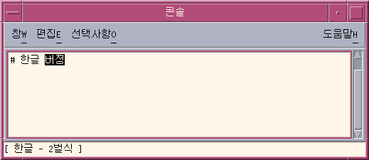
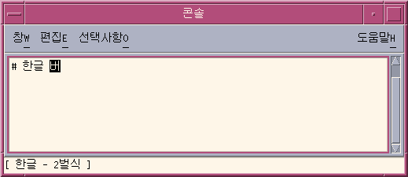
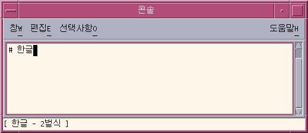
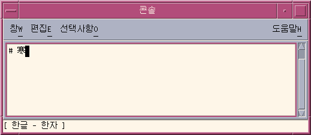
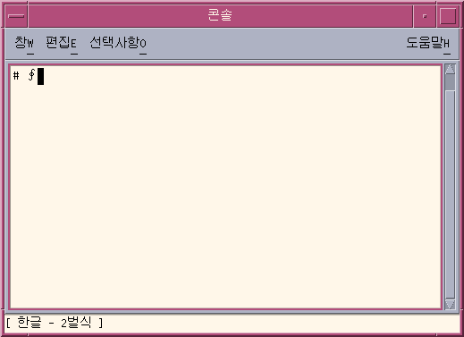
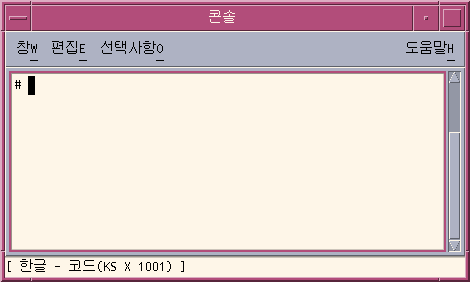
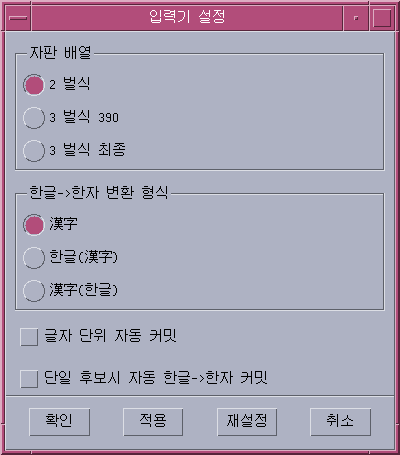
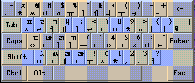
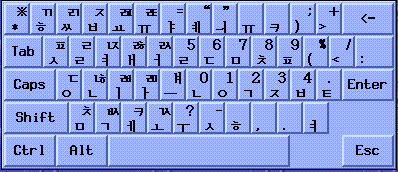
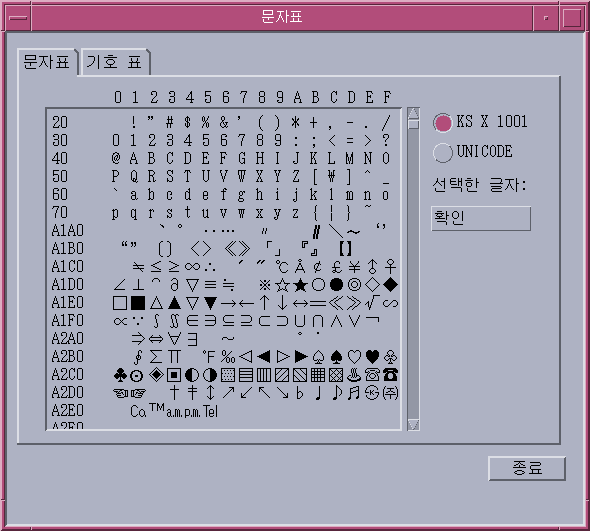

The status area shows what the current input conversion mode is and what is the active keyboard layout is. Several modes are available, as discussed in following sections.
The lookup choice area is a popup that displays multiple Hanja or special character choices available for conversion of character(s) in the preedit area.
The Auxiliary Window Area is a windows that helps input Korean characters in a way a user want.
The initial default setting is basic ASCII/English mode.
Typing on the keyboard simply enters ASCII characters.
The status region in the lower left corner shows ASCII/English input mode:

Type Control-Space, or if you have a Hangul keyboard type the key labeled Hangul/English. (These keys toggle on/off Hangul input conversion.)
The status region then shows that the current input status is for Hangul input and auxiliary window show up.

With Hangul input conversion on, typing appropriate sequences of keys composes
Hangul characters in the preedit area on the screen.

3.1.4 backspacing and Deleting Characters
Backspace and Delete keys delete characters. But using one in the preedit area deletes only the last character (JaMo) in the current syllable. This and following examples demonstrate Backspace/Delete operation.
- Let's suppose there's this text being composed, which is typo.

- Enter one backspace. The input appears like this:

- Type another backspace. The input appears like this:

- Type another backspace. The input appears like this:

- Type two backspaces.

The folowing preedit region contains five Hangul syllables that have not yet been committed.


3.2.1 Switching to different the Keyboard layout
- 2 beol sik
- 3 beol sik 390
- 3 beol sik final


Entering Hanja can be done in several ways.
One of the most common way is to convert Hangul input to Hanja, on a character by character basis or word by word basis.
- By selecting one of the candidate(s) from the lookup choice window
- By switching the Hanja candidate through all the available list one by one.
The following examples shows how to convert a Hangul character to a Hanja character. Same method is used to convert Hangul characters(word) to Hanja characters(word).
- With Hangul input conversion on, type an appropriate sequence of keys(pronunciation
of the Hanja that you want to input) to compose a Hangul character in the
preedit area on the screen:

- Type Control+W, then the lookup window pops up.
(Depending on the user's setting, this may automatically commit the Hanj
a candidate if there's only one candidate entry in dictionary)

- You can navigate page to page by pressing the keys show below
- If the current page contains the character that you are looking for, you can either press the label of the character or you can press the space key to move the highlighted area to the Hanja you want and then press enter or you can use your mouse to click the Hanja you want.
- You can do exactly same by pressing Control + Q, Control + E, Control
+ R instead pressing Control + W, with the difference of format of committed
string as shown below
Key Sequence Committed Format Ctrl + Q Hanja Ctrl + W By the format set by the OptionAux window Ctrl + E Hangul(Hanja) Ctrl + R Hanja(Hangul) - In case you want to abort this lookup mode, you can press Control + A to exit from this lookup mode.
| Key Sequence | Operation |
| Ctrl + N | Next Page |
| Page Up | Next Page |
| Ctrl + P | Previous Page |
| Page Down | Previous Page |
- With Hangul input conversion on, type an appropriate sequence of keys(pronunciation
of the Hanja that you want to input) to compose a Hangul character in the
preedit area on the screen:

- Type Control-N to convert it to a possible Hanja choice.
Status region shows that you are now in hanja conversion mode.
Typing Control-N again and again converts the Hangul character through the series of possible Hanja choices, one at a time (until the original Hangul reappears after all Hanjas have been displayed). Control-P converts back to the previous choice.

Key Sequence Operation Ctrl + N Next Character Ctrl + P Previous Character - Type Control+K when you have the Hanja character you want in the preedit
area.

- Typing Control-N or Control-P pages forward or back through the lookup choice area display
- Typing the letter of the choice makes/commits the choice and returns to Hangul input mode
- Typing Control-A at any time aborts the current lookup choice pages without choosing and returns to Hangul input conversion mode.
- With Hangul input conversion on, type Control-J. The status
area shows that you are now in symbol input mode and input method server
pops up a page of category choices:
- Type the letter of a category (a in the following example)
to display the first page of choices, or press enter after scrolling down
the list using space key to do the same thing.
- After Control-N has been typed six times the following
is displayed:

- Type k to choose/commit the displayed character and return
to Hangul input mode:
 - In case user wants to abort the symbol lookup mode, user can press Control + A to exit from the symbol input mode.


- KS X 1001 (known as ks c 5601-1987)
- UTF-8 Encoding
- Unicode
current locale Key sequence character set to use ko_KR.EUC Contrl+X KS X 1001 ko_KR.UTF-8 Control+X KS X 1001 ko_KR.UTF-8 Control+Shift+X UTF-8

- Make sure Hangul input conversion is on:
- Then toggle hex mode on by typing Control-X.
The status shows that now you are in hex input mode. It also tells you that you are using KS X 1001 encoding values to input Hangul characters.
And the Palette Window's input mode window changes to show the current input mode.
The only keys that have any effect at this point are delete keys, letters a through f, numbers 0 through 9, and Control-X (which toggles hex mode off again).
- Type the first three keys of the hex code of the character, for example
a2d, in the preedit area. The screen appears as follows after the first
three numbers are typed:

- Type d. The designated character is then displayed and automatically
committed after the fourth number is typed:

- Hex mode remains on until toggled off by Control-X.
- A character can be entered using UTF-8 encoding after pressing Control+Shift+X.


- Grabber:Click this button to move the pallette window
- Input Mode selector: Click this button to select the input mode that
you want
Upon click on this button, submenu appears that includes- Normal Hangul input mode
- Hex Input mode
- Symbol input mode
- Symbol input mode
- Half_width/Full_width mode selector:click this button to toggle between Half width and Full width input mode
- Hangul->Hanaj convertor:Click this button to convert the current Hangul character(s) in the preedit area into Hanja character(s)
- Visual Keyboard Launcher:Click this button to show Visual Keyboard Window
- Utility Button


- Default Keyboard Layout to use
- 2 beol sik
- 3 beol sik 390
- 3 beol sik final
- Default Hangul to Hanja conversion format
- Hangul -> Hanja
- Hangul -> Hangul(Hanja)
- Hangul -> Hanja(Hangul)
- Automatic commit on a character basis
This option allows you to commit a character in the preedit buffer as soon as the single character is completed. - Automatic commit on a single candidate conversion
This option allows you to commit a converted Hanja character(s) automatically if there is only one candidate available for this conversion.
- 2 Beol Sik

- 3 Beol Sik 390

- 3 Beol Sik Final

You can click the keyboard button on the Virtual Auxiliary window to enter the character on the keyboard button.To close the Virtual Keyboard Auxiliary window, chose the 'Close Keyboard' menu of Visual Keyboard Launcher submenu.
4.4. Lookup Table Auxiliary Window
To Launch this window, click Utilities button from the Palette Auxiliary window, and select Code Point Table menu.The Lookup Table Auxiliary Windows shows up.
Use this window to find/input any characters that are available from the current locale. Depending on the current locale, all the characters included in the current locale are displayed.This window contains 2 tabs of following- Character table: show all the characters contained in the current character set sorted by code point value.
- Symbol table: shows special characters grouped by category. The
list of categories are same as the ones that you will see when you press
'Ctrl + J' to start the symbol input mode

To input any of those from the table, double click a character, or select a character and press the 'Insert' Button at the right hand side of the window
4.5. Input Method Help
To access the online help of Korean Input method, click the input method help item from the utilities menu, a browser such as Netscape will appear and display the help information for input methods.